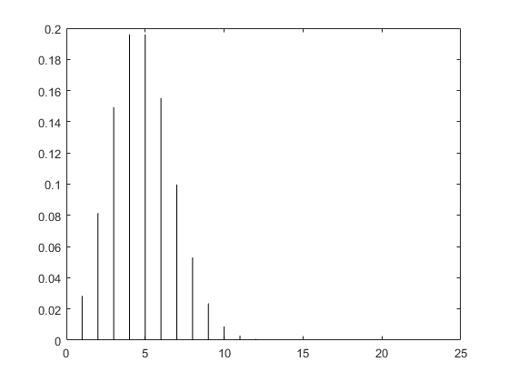
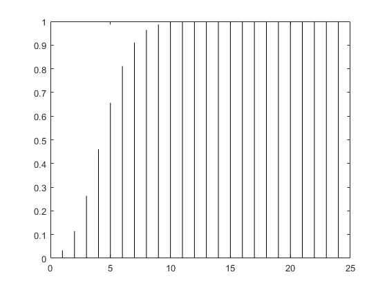
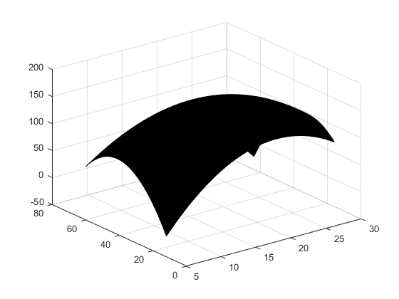
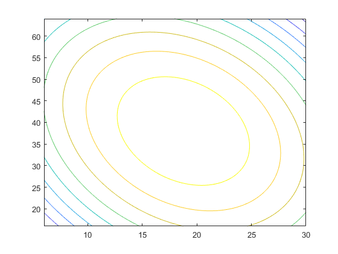

习题8.1
a
% 很明显题目是个泊松分布，均值lambda=5
% i
p_8 = poisspdf(8,5)
fprintf('the probability of 8 calls per minute is %f',[p_8])
% ii
p_2 = poisspdf(2,5)
fprintf('the probability of 2 calls per minute is %f',[p_2])p_8 =
0.0653
the probability of 8 calls per minute is 0.065278
p_2 =
0.0842
the probability of 2 calls per minute is 0.084224b
% 这题也是一个泊松分布，lambda = 10
% 获得一个busy signal就是指每分钟的电话数多于这个均值10
p_busySignal = 1 - sum(poisspdf(0:10,5))
fprintf('the probability of getting a busy signalis %f',[p_busySignal])p_busySignal =
0.0137
the probability of getting a busy signalis 0.013695习题8.4
a
% 求均值和方差
[underWeight_mean,underWeight_variance] = binostat(24,0.2)underWeight_mean =
4.8000
underWeight_variance =
3.8400b
% 不超过两个item underweight 的概率
p_NMT_TwoUnderWeight = sum(binopdf(0:2,24,0.2))p_NMT_TwoUnderWeight =
0.1145c
% 没有一个item underweights 的概率
p_None_UnderWeight = binopdf(0,24,0.2)p_None_UnderWeight =
0.0047d
% 画出under items的数量的概率分布函数和累计概率分布函数
n = 1:24;
pb = binopdf(n,24,0.2);
plot([n;n],[zeros(1,24);pb],'k')
%累计概率分布函数
cpb = binocdf(1:24,24,0.2);
plot([n;n],[zeros(1,24);cpb],'k')
习题8.7
x = [2.5629,2.5630,2.5628,2.5634,2.5619,2.5613,2.5630,2.5628,2.5623,2.5631,2.5635,2.5623];
x_mean = mean(x);
x_std = std(x);
USL = 2.565;
LSL = 2.560;
PCR = (USL-LSL)/(6*x_std)
PCR_k = min((USL-x_mean)/(3*x_std),(x_mean-LSL)/(3*x_std))
p = 1 - normcdf((USL-x_mean)/x_std,0,1) + normcdf((LSL-x_mean)/x_std,0,1)PCR =
1.3103
PCR_k =
1.2099
ans =
1.5351e-04从上面我们发现 \(PCR\) 和 \(PCK_k\) 相差了 0.1左右，应该不算是集中的
习题8.10
a
% 根据函数形式求出所有beta_j来最佳拟合y
y = [144 142 124 64 96 74 136 54 92 96 92 82 76 68]';
x_1 = [18 24 12 30 30 26 26 22 22 14 10 10 6 6]';
x_2 = [52 40 40 48 32 56 24 64 16 64 56 24 48 32]';
X = [ones(length(y),1),x_1,x_2,x_1.^2,x_2.^2,x_1.*x_2];
beta = regress(y,X)beta =
-288.2799
24.1642
11.5114
-0.5073
-0.1181
-0.1349b
% 画 surface
x_11 = linspace(min(x_1),max(x_1),1000);
x_22 = linspace(min(x_2),max(x_2),1000);
[x_mesh1,x_mesh2] = meshgrid(x_11,x_22);
y_ = beta(1) + beta(2)*x_mesh1 + beta(3)*x_mesh2 + beta(4)*(x_mesh1.^2) + beta(5)*(x_mesh2.^2) + beta(6)*x_mesh1.*x_mesh2;
surf(x_mesh1,x_mesh2,y_)
% 画contour
contour(x_mesh1,x_mesh2,y_)
c
先尝试采用暴力解法
% 找到最大值对应的column 和 row
max_y = max(max(y_))
[row,col] = find(max_y == y_)max_y =
157.2292
row =
2294
col =
2659x_1max = x_mesh1(row,col)
x_2max = x_mesh2(row,col)x_1max =
18.7610
x_2max =
38.0172下面用另一种方法求最大值，matlab中提供了fminsearch()这个函数求最小值，将原函数前面加个负号，就可以通过fminsearch()来求解了。
f_beta = @(x)(-(beta(1) + beta(2)*x(1) + beta(3)*x(2) + beta(4)*x(1)^2 + beta(5)*x(2)^2 + beta(6)*x(1)*x(2)))f_beta =
function_handle with value:
@(x)(-(beta(1)+beta(2)*x(1)+beta(3)*x(2)+beta(4)*x(1)^2+beta(5)*x(2)^2+beta(6)*x(1)*x(2)))[x,fval]=fminsearch(f_beta,[0,0])x =
18.7635 38.0155
fval =
-157.2292fprintf('when y is maximum value x_1 = %f ,x_2 = %f',[x])when y is maximum value x_1 = 18.763514 ,x_2 = 38.015484